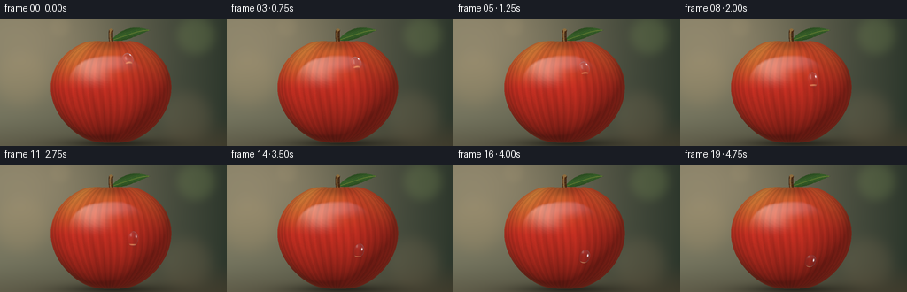
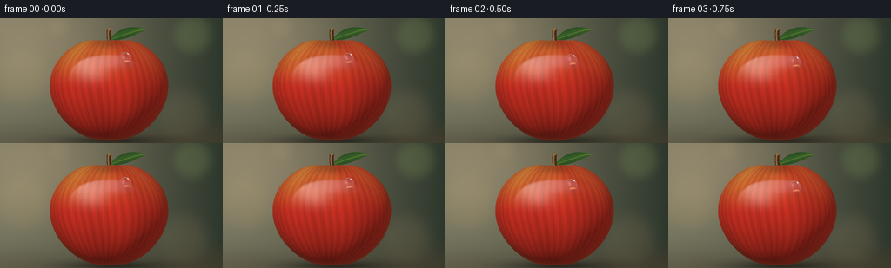

CODING AGENTS AS PIXEL WORLD MODELS
traex/GPT-6.1-Sol · phygen_038
点击播放 · 原生 RGB 像素
逐轮保存的候选
回放视频、检查图与代码变化。
每份候选均可单独播放。实际图片检查记录在下方工具轨迹中。
候选 01播放与检查图
点击播放 · 原生 RGB 像素


展开代码变化
--- 上一保存版本
+++ 本次保存版本
@@ -0,0 +1,262 @@
+"""Procedural, supersampled macro photography of a dew drop on a waxed apple.
+No image assets: geometry, skin, lighting and refraction are calculated locally.
+"""
+from pathlib import Path
+import json
+import numpy as np
+from PIL import Image, ImageDraw, ImageFilter
+import artifact_io
+
+ROOT = Path(__file__).resolve().parent
+SPEC = json.loads((ROOT / 'task_spec.json').read_text())
+S = 3
+W, H = SPEC['width'] * S, SPEC['height'] * S
+Y, X = np.mgrid[0:H, 0:W].astype(np.float64)
+X = (X + .5) / S
+Y = (Y + .5) / S
+CX, CY = 125., 82.
+RX, RY, RZ = 68., 61., 63.
+
+def normalize(v):
+ return v / np.maximum(np.linalg.norm(v, axis=-1, keepdims=True), 1e-12)
+
+def smooth(a, b, x):
+ t = np.clip((x-a)/(b-a), 0, 1)
+ return t*t*(3-2*t)
+
+def apple_f(x, y, z):
+ xx, yy, zz = x/RX, y/RY, z/RZ
+ r2 = xx*xx + zz*zz
+ phi = np.arctan2(zz, xx)
+ # Five subtle lobes, rounded shoulders and the depressed stem cavity.
+ lobes = .022*np.cos(5*phi+.45)*(0.3+0.7*yy*yy)
+ width = 1 + .075*yy - .025*yy*yy + lobes
+ dip = .155*np.exp(-r2/.058)*smooth(.25,.75,yy)
+ bottom = .045*np.exp(-r2/.075)*smooth(.3,.8,-yy)
+ return r2/(width*width) + (yy+dip-bottom)**2 - 1
+
+def normal_at(x,y,z):
+ d = .06
+ return normalize(np.stack([apple_f(x+d,y,z)-apple_f(x-d,y,z),
+ apple_f(x,y+d,z)-apple_f(x,y-d,z),
+ apple_f(x,y,z+d)-apple_f(x,y,z-d)],axis=-1))
+
+PX, PY = X-CX, CY-Y
+# Locate the frontmost root, including the nonconvex crown.
+Z = np.zeros_like(X)
+found = np.zeros_like(X,dtype=bool)
+last = np.full_like(X, RZ*1.12)
+for depth in np.linspace(RZ*1.12, 0., 64)[1:]:
+ f = apple_f(PX,PY,depth)
+ hit = (~found)&(f<=0)
+ if np.any(hit):
+ lo=np.full(hit.sum(), depth)
+ hi=last[hit]
+ ax,ay=PX[hit],PY[hit]
+ for _ in range(15):
+ mid=(lo+hi)*.5
+ inside=apple_f(ax,ay,mid)<=0
+ lo=np.where(inside,mid,lo)
+ hi=np.where(inside,hi,mid)
+ Z[hit]=(hi+lo)*.5
+ found[hit]=True
+ last.fill(depth)
+MASK=found
+N=normal_at(PX,PY,Z)
+
+# Out-of-focus studio/garden background. All color computations are linear.
+BG=np.zeros((H,W,3),dtype=np.float64)
+grad=np.clip(X/256.,0,1)
+BG[:]=np.array([.15,.16,.102])[None,None,:]*(1-grad[...,None])+np.array([.022,.035,.021])[None,None,:]*grad[...,None]
+BG += np.exp(-((X-33)/96)**2-((Y-22)/76)**2)[...,None]*np.array([.16,.11,.065])
+# Low-contrast large defocused circles, without distracting hard boundaries.
+for bx,by,br,bc in [(221,19,24,(.035,.05,.015)),(25,68,35,(.045,.027,.008)),(210,112,33,(.035,.024,.012)),(68,9,13,(.025,.018,.008))]:
+ disc = np.exp(-((((X-bx)**2+(Y-by)**2)/(br*br))**2)*1.6)
+ BG += disc[...,None]*np.array(bc)
+floor=smooth(107,150,Y)
+BG=BG*(1-.46*floor[...,None])+np.array([.083,.055,.025])[None,None,:]*floor[...,None]*.45
+shadow=np.exp(-((X-129)/62)**2-((Y-141)/6.1)**2)
+BG*=1-.79*shadow[...,None]
+BG*= (.88+.12*np.exp(-((X-128)/180)**2-((Y-67)/115)**2))[...,None]
+
+# Woody stem and a narrow pointed leaf, placed behind the front of the apple.
+layer=Image.new('RGBA',(W,H),(0,0,0,0))
+draw=ImageDraw.Draw(layer)
+def points(coords): return [(round(a*S),round(b*S)) for a,b in coords]
+def bezier(p0,p1,p2,p3,n=60):
+ t=np.linspace(0,1,n)[:,None]
+ return (1-t)**3*np.array(p0)+3*(1-t)**2*t*np.array(p1)+3*(1-t)*t*t*np.array(p2)+t**3*np.array(p3)
+upper=bezier((126,24),(136,11),(151,7),(169,13))
+lower=bezier((169,13),(157,17),(141,28),(126,24))
+leafmask=Image.new('L',(W,H),0)
+ImageDraw.Draw(leafmask).polygon(points(np.concatenate([upper,lower])),fill=255)
+leafmask=np.asarray(leafmask)/255.
+u=(X-127)/42
+v=Y-(24-11*u)
+leafrgb=np.zeros((H,W,3))
+leaflight=.56+.40*np.exp(-((v+2)/4)**2)+.06*np.sin(X*2.1+Y*3)
+leafrgb[:]=np.array([.032,.113,.017])*leaflight[...,None]
+BG=BG*(1-leafmask[...,None])+leafrgb*leafmask[...,None]
+# Midrib and side veins are deliberately fine and muted.
+draw.line(points(bezier((127,24),(143,19),(156,13),(168,13))),fill=(107,129,52,180),width=1*S)
+for u0 in [.24,.40,.56,.71,.83]:
+ xx=127+42*u0; yy=24-11*u0
+ draw.line(points([(xx,yy),(xx-3,yy-4)]),fill=(96,118,49,88),width=1)
+ draw.line(points([(xx,yy),(xx-1,yy+3)]),fill=(73,105,36,100),width=1)
+stem=bezier((126,33),(126,24),(124,21),(125.5,12.5),40)
+draw.line(points(stem),fill=(68,39,19,255),width=5*S,joint='curve')
+draw.line(points(stem+np.array([-.55,0])),fill=(121,80,38,255),width=2*S,joint='curve')
+draw.line(points(stem+np.array([-.95,0])),fill=(153,112,62,220),width=S,joint='curve')
+for k in range(5,35,5):
+ a=stem[k]
+ draw.line(points([(a[0]-1.7,a[1]),(a[0]+1.4,a[1]-.6)]),fill=(70,45,22,125),width=1)
+draw.ellipse((123.6*S,11.5*S,127.6*S,14.2*S),fill=(141,108,62,255))
+rgba=np.asarray(layer).astype(float)/255
+alpha=rgba[...,3:4]
+BG=BG*(1-alpha)+np.maximum(rgba[...,:3],0)**2.2*alpha
+
+# Apple skin: colored vertical striations, wax and very small lenticels.
+lon=np.arctan2(PX/RX,Z/RZ)
+lat=np.arcsin(np.clip(PY/RY,-1,1))
+streak=np.sin(lon*44+1.8*np.sin(lat*3)+.5*np.sin(lon*12))
+streak2=np.sin(lon*109+np.sin(lat*5)*.7)
+broad=.5+.5*np.sin(lon*7+lat*1.3+.5)
+gold=smooth(.0,.85,PY/RY)*(.25+.5*(1-smooth(-.7,.35,lon)))
+gold*=.64+.3*broad
+red=np.array([.46,.019,.009])
+yellow=np.array([.42,.185,.028])
+albedo=red[None,None,:]*(1-gold[...,None])+yellow[None,None,:]*gold[...,None]
+albedo *= (1+.115*streak+.035*streak2+.1*(broad-.5))[...,None]
+# Fine spatial random-looking pattern; no stochastic flicker between frames.
+grain=np.sin(PX*9.43+Z*5.71+PY*4.52)*np.sin(PX*3.16-PY*8.74+Z*2.77)
+albedo*= (1+.034*grain)[...,None]
+# Sparse pale pinpoints in a jittered parameterized grid follow the skin.
+u=lon*82
+v=lat*78
+ix,iy=np.floor(u),np.floor(v)
+def hash2(a,b):
+ return np.mod(np.sin(a*127.1+b*311.7+33.9)*43758.5453,1)
+hx=hash2(ix,iy); hy=hash2(ix+45,iy+83)
+ox=.18+.64*hx; oy=.18+.64*hy
+dist=((u-ix-ox)/.091)**2+((v-iy-oy)/.11)**2
+pores=np.exp(-dist*1.4)*(hash2(ix+1,iy+4)>.69)
+albedo=albedo*(1-.24*pores[...,None])+np.array([.35,.18,.065])[None,None,:]*pores[...,None]*.24
+# Minute, smooth surface normals: primarily polished rather than rough.
+NN=normalize(N+np.stack([.006*np.sin(PX*2.8+PY*4.1),.006*np.sin(PY*2.3+Z*3.4),np.zeros_like(X)],-1))
+KEY=normalize(np.array([-.52,.72,1.05]))
+FILL=normalize(np.array([.75,.25,.65]))
+diff=np.maximum(np.sum(NN*KEY,axis=-1),0)
+fill=np.maximum(np.sum(NN*FILL,axis=-1),0)
+lighting=.20+1.07*diff+.17*fill
+BASE=albedo*lighting[...,None]
+# Cavity shades near crown and calyx; no flat dark outline.
+cavity=np.exp(-((PX/18)**2+((PY-53)/7)**2))
+BASE*=1-.42*cavity[...,None]
+# Broad window reflected by waxed skin.
+R=2*NN[...,2:3]*NN-np.array([0,0,1.])
+ref1=np.exp(-(((R[...,0]+.52)/.35)**2+((R[...,1]-.66)/.40)**2))*smooth(.03,.18,R[...,2])
+ref2=np.exp(-(((R[...,0]+.16)/.72)**2+((R[...,1]-.91)/.21)**2))*smooth(.03,.22,R[...,2])
+fres=.035+.965*(1-np.clip(NN[...,2],0,1))**5
+BASE+=ref1[...,None]*np.array([.92,.83,.68])*(.15+fres[...,None]*1.2)
+BASE+=ref2[...,None]*np.array([.75,.86,1.0])*.09
+# Warm narrow rim from the softly glowing surroundings.
+BASE+=(1-np.clip(N[...,2],0,1))[...,None]**4*np.array([.035,.014,.005])
+SCENE=np.where(MASK[...,None],BASE,BG)
+
+# Interpolate the analytic front-surface image for ray-traced refraction.
+def sample(array,sx,sy):
+ fx=np.clip(sx*S-.5,0,W-1.001)
+ fy=np.clip(sy*S-.5,0,H-1.001)
+ ix=fx.astype(int); iy=fy.astype(int)
+ dx=fx-ix; dy=fy-iy
+ if array.ndim==3:
+ dx=dx[...,None];dy=dy[...,None]
+ return (array[iy,ix]*(1-dx)*(1-dy)+array[iy,ix+1]*dx*(1-dy)+array[iy+1,ix]*(1-dx)*dy+array[iy+1,ix+1]*dx*dy)
+
+def center_surface(x,y):
+ lo,hi=0.,RZ*1.15
+ for _ in range(40):
+ z=(lo+hi)/2
+ if apple_f(x,y,z)<0: lo=z
+ else: hi=z
+ return (lo+hi)/2
+
+frames=[]
+for frame in range(SPEC['frames']):
+ t=frame/(SPEC['frames']-1)
+ # Smooth gravity-driven glide down a fixed meridian on the curved apple.
+ progress=.16*t+.84*(t*t*(3-2*t))
+ latitude=.64-1.10*progress
+ sy=RY*np.sin(latitude)
+ sx=RX*.36*np.cos(latitude)+.9*np.sin(progress*np.pi)
+ sz=center_surface(sx,sy)
+ P=np.array([sx,sy,sz])
+ n=normal_at(sx,sy,sz)
+ down=normalize(np.array([0.,-1.,0.])-np.dot(np.array([0.,-1.,0.]),n)*n)
+ side=normalize(np.cross(down,n))
+ # Constant-volume sessile drop. Mild elongation during the fastest glide.
+ stretch=1+.065*np.sin(np.pi*t)
+ a,b,c=6.6/np.sqrt(stretch),8.15*stretch,6.2/np.sqrt(stretch)
+ C=P-n*1.65
+ basis=np.stack([side,down,n],axis=1)
+ Q=basis@np.diag([1/a**2,1/b**2,1/c**2])@basis.T
+ # Work in a cropped region to keep refraction efficient.
+ screenx,screeny=CX+sx,CY-sy
+ x0=max(0,int((screenx-14)*S));x1=min(W,int((screenx+14)*S)+1)
+ y0=max(0,int((screeny-15)*S));y1=min(H,int((screeny+15)*S)+1)
+ sl=np.s_[y0:y1,x0:x1]
+ xx,yy=PX[sl],PY[sl]
+ zz=Z[sl]
+ delta=np.stack([xx-C[0],yy-C[1],np.full_like(xx,-C[2])],axis=-1)
+ bb=2*np.einsum('...i,i->...',delta,Q[:,2])
+ cc=np.einsum('...i,ij,...j->...',delta,Q,delta)-1
+ disc=bb*bb-4*Q[2,2]*cc
+ zw=(-bb+np.sqrt(np.maximum(disc,0)))/(2*Q[2,2])
+ water=(disc>0)&(zw>zz+.025)&MASK[sl]
+ hit=np.stack([xx,yy,zw],axis=-1)
+ wn=normalize(np.einsum('ij,...j->...i',Q,hit-C))
+ cosi=np.clip(wn[...,2],0,1)
+ eta=1/1.333
+ refr=eta*np.array([0,0,-1.])+(eta*cosi-np.sqrt(1-eta*eta*(1-cosi*cosi)))[...,None]*wn
+ distance=np.maximum((zw-zz)/np.maximum(-refr[...,2],.1),0)
+ for _ in range(5):
+ target=hit+refr*distance[...,None]
+ tz=sample(Z,CX+target[...,0],CY-target[...,1])
+ distance=np.clip(distance+(target[...,2]-tz)/np.maximum(-refr[...,2],.1),0,25)
+ target=hit+refr*distance[...,None]
+ substrate=sample(BASE,CX+target[...,0],CY-target[...,1])
+ reflection=2*wn[...,2:3]*wn-np.array([0,0,1.])
+ # A broad luminous studio window and cool ambient reflections in the water.
+ sky=smooth(-.25,.70,reflection[...,1])
+ env=np.array([.08,.115,.12])[None,None,:]+sky[...,None]*np.array([.47,.59,.66])
+ window=np.exp(-(((reflection[...,0]+.51)/.27)**4+((reflection[...,1]-.65)/.33)**4))*smooth(0,.14,reflection[...,2])
+ env+=window[...,None]*np.array([4.4,4.25,3.8])
+ fresnel=.0204+.9796*(1-cosi)**5
+ droprgb=substrate*(1-fresnel[...,None])+env*fresnel[...,None]
+ droprgb*=1-.065*(1-cosi[...,None])
+ # Refraction focuses a fine golden caustic along the lower contact region.
+ local=np.einsum('ij,...j->...i',basis.T,hit-P)
+ caustic=np.exp(-((local[...,0]-1.0)/3.9)**2-((local[...,1]-6.4)/.65)**2)
+ droprgb+=caustic[...,None]*np.array([.36,.23,.095])
+ # A small concentrated white glint, continuous across every frame.
+ glint=np.exp(-((local[...,0]+2.2)/.66)**2-((local[...,1]+3.1)/1.05)**2)
+ droprgb+=glint[...,None]*np.array([1.3,1.4,1.44])
+ image=SCENE.copy()
+ # Delicate contact occlusion and a subdued moving sheen under the drop.
+ footprint=(local[...,0]/a)**2+(local[...,1]/b)**2
+ contact=np.exp(-((footprint-.98)/.10)**2)*.20
+ shadowmap=np.exp(-((X[sl]-(screenx+.6))/6.4)**2-((Y[sl]-(screeny+3.3))/7.3)**2)*.12
+ under=image[sl]*(1-shadowmap[...,None])
+ dropcolor=droprgb*(1-contact[...,None])
+ image[sl]=np.where(water[...,None],dropcolor,under)
+ # Subtle photographic response, then gamma and high-quality area reduction.
+ image=np.clip(image,0,None)
+ image=np.where(image<.8,image, .8+.2*(1-np.exp(-(image-.8)/.2)))
+ srgb=np.clip(image,0,1)**(1/2.2)
+ im=Image.fromarray(np.uint8(np.clip(srgb*255+.5,0,255)))
+ im=im.resize((SPEC['width'],SPEC['height']),Image.Resampling.LANCZOS)
+ frames.append(np.asarray(im))
+
+frames=np.stack(frames).astype(np.uint8)
+artifact_io.save(frames,ROOT)
+print(f'Saved {len(frames)} RGB frames, {frames.shape[2]} x {frames.shape[1]}, {SPEC["fps"]} fps')
可观测工具轨迹
实际执行的命令与返回图片。
命令 1exit 0
/bin/bash -lc 'ls -la && cat prompt.txt && cat GENERATION_RULES.md && cat task_spec.json'
命令 2exit 0
/bin/bash -lc "cat artifact_io.py && python - <<'PY' import numpy,PIL print(numpy.__version__) PY"
命令 3exit 0
/bin/bash -lc "cat > generate.py <<'PY'
\"\"\"Procedural, supersampled macro photography of a dew drop on a waxed apple.
No image assets: geometry, skin, lighting and refraction are calculated locally.
\"\"\"
from pathlib import Path
import json
import numpy as np
from PIL import Image, ImageDraw, ImageFilter
import artifact_io
ROOT = Path(__file__).resolve().parent
SPEC = json.loads((ROOT / 'task_spec.json').read_text())
S = 3
W, H = SPEC['width'] * S, SPEC['height'] * S
Y, X = np.mgrid[0:H, 0:W].astype(np.float64)
X = (X + .5) / S
Y = (Y + .5) / S
CX, CY = 125., 82.
RX, RY, RZ = 68., 61., 63.
def normalize(v):
return v / np.maximum(np.linalg.norm(v, axis=-1, keepdims=True), 1e-12)
def smooth(a, b, x):
t = np.clip((x-a)/(b-a), 0, 1)
return t*t*(3-2*t)
def apple_f(x, y, z):
xx, yy, zz = x/RX, y/RY, z/RZ
r2 = xx*xx + zz*zz
phi = np.arctan2(zz, xx)
# Five subtle lobes, rounded shoulders and the depressed stem cavity.
lobes = .022*np.cos(5*phi+.45)*(0.3+0.7*yy*yy)
width = 1 + .075*yy - .025*yy*yy + lobes
dip = .155*np.exp(-r2/.058)*smooth(.25,.75,yy)
bottom = .045*np.exp(-r2/.075)*smooth(.3,.8,-yy)
return r2/(width*width) + (yy+dip-bottom)**2 - 1
def normal_at(x,y,z):
d = .06
return normalize(np.stack([apple_f(x+d,y,z)-apple_f(x-d,y,z),
apple_f(x,y+d,z)-apple_f(x,y-d,z),
apple_f(x,y,z+d)-apple_f(x,y,z-d)],axis=-1))
PX, PY = X-CX, CY-Y
# Locate the frontmost root, including the nonconvex crown.
Z = np.zeros_like(X)
found = np.zeros_like(X,dtype=bool)
last = np.full_like(X, RZ*1.12)
for depth in np.linspace(RZ*1.12, 0., 64)[1:]:
f = apple_f(PX,PY,depth)
hit = (~found)&(f<=0)
if np.any(hit):
lo=np.full(hit.sum(), depth)
hi=last[hit]
ax,ay=PX[hit],PY[hit]
for _ in range(15):
mid=(lo+hi)*.5
inside=apple_f(ax,ay,mid)<=0
lo=np.where(inside,mid,lo)
hi=np.where(inside,hi,mid)
Z[hit]=(hi+lo)*.5
found[hit]=True
last.fill(depth)
MASK=found
N=normal_at(PX,PY,Z)
# Out-of-focus studio/garden background. All color computations are linear.
BG=np.zeros((H,W,3),dtype=np.float64)
grad=np.clip(X/256.,0,1)
BG[:]=np.array([.15,.16,.102])[None,None,:]*(1-grad[...,None])+np.array([.022,.035,.021])[None,None,:]*grad[...,None]
BG += np.exp(-((X-33)/96)**2-((Y-22)/76)**2)[...,None]*np.array([.16,.11,.065])
# Low-contrast large defocused circles, without distracting hard boundaries.
for bx,by,br,bc in [(221,19,24,(.035,.05,.015)),(25,68,35,(.045,.027,.008)),(210,112,33,(.035,.024,.012)),(68,9,13,(.025,.018,.008))]:
disc = np.exp(-((((X-bx)**2+(Y-by)**2)/(br*br))**2)*1.6)
BG += disc[...,None]*np.array(bc)
floor=smooth(107,150,Y)
BG=BG*(1-.46*floor[...,None])+np.array([.083,.055,.025])[None,None,:]*floor[...,None]*.45
shadow=np.exp(-((X-129)/62)**2-((Y-141)/6.1)**2)
BG*=1-.79*shadow[...,None]
BG*= (.88+.12*np.exp(-((X-128)/180)**2-((Y-67)/115)**2))[...,None]
# Woody stem and a narrow pointed leaf, placed behind the front of the apple.
layer=Image.new('RGBA',(W,H),(0,0,0,0))
draw=ImageDraw.Draw(layer)
def points(coords): return [(round(a*S),round(b*S)) for a,b in coords]
def bezier(p0,p1,p2,p3,n=60):
t=np.linspace(0,1,n)[:,None]
return (1-t)**3*np.array(p0)+3*(1-t)**2*t*np.array(p1)+3*(1-t)*t*t*np.array(p2)+t**3*np.array(p3)
upper=bezier((126,24),(136,11),(151,7),(169,13))
lower=bezier((169,13),(157,17),(141,28),(126,24))
leafmask=Image.new('L',(W,H),0)
ImageDraw.Draw(leafmask).polygon(points(np.concatenate([upper,lower])),fill=255)
leafmask=np.asarray(leafmask)/255.
u=(X-127)/42
v=Y-(24-11*u)
leafrgb=np.zeros((H,W,3))
leaflight=.56+.40*np.exp(-((v+2)/4)**2)+.06*np.sin(X*2.1+Y*3)
leafrgb[:]=np.array([.032,.113,.017])*leaflight[...,None]
BG=BG*(1-leafmask[...,None])+leafrgb*leafmask[...,None]
# Midrib and side veins are deliberately fine and muted.
draw.line(points(bezier((127,24),(143,19),(156,13),(168,13))),fill=(107,129,52,180),width=1*S)
for u0 in [.24,.40,.56,.71,.83]:
xx=127+42*u0; yy=24-11*u0
draw.line(points([(xx,yy),(xx-3,yy-4)]),fill=(96,118,49,88),width=1)
draw.line(points([(xx,yy),(xx-1,yy+3)]),fill=(73,105,36,100),width=1)
stem=bezier((126,33),(126,24),(124,21),(125.5,12.5),40)
draw.line(points(stem),fill=(68,39,19,255),width=5*S,joint='curve')
draw.line(points(stem+np.array([-.55,0])),fill=(121,80,38,255),width=2*S,joint='curve')
draw.line(points(stem+np.array([-.95,0])),fill=(153,112,62,220),width=S,joint='curve')
for k in range(5,35,5):
a=stem[k]
draw.line(points([(a[0]-1.7,a[1]),(a[0]+1.4,a[1]-.6)]),fill=(70,45,22,125),width=1)
draw.ellipse((123.6*S,11.5*S,127.6*S,14.2*S),fill=(141,108,62,255))
rgba=np.asarray(layer).astype(float)/255
alpha=rgba[...,3:4]
BG=BG*(1-alpha)+np.maximum(rgba[...,:3],0)**2.2*alpha
# Apple skin: colored vertical striations, wax and very small lenticels.
lon=np.arctan2(PX/RX,Z/RZ)
lat=np.arcsin(np.clip(PY/RY,-1,1))
streak=np.sin(lon*44+1.8*np.sin(lat*3)+.5*np.sin(lon*12))
streak2=np.sin(lon*109+np.sin(lat*5)*.7)
broad=.5+.5*np.sin(lon*7+lat*1.3+.5)
gold=smooth(.0,.85,PY/RY)*(.25+.5*(1-smooth(-.7,.35,lon)))
gold*=.64+.3*broad
red=np.array([.46,.019,.009])
yellow=np.array([.42,.185,.028])
albedo=red[None,None,:]*(1-gold[...,None])+yellow[None,None,:]*gold[...,None]
albedo *= (1+.115*streak+.035*streak2+.1*(broad-.5))[...,None]
# Fine spatial random-looking pattern; no stochastic flicker between frames.
grain=np.sin(PX*9.43+Z*5.71+PY*4.52)*np.sin(PX*3.16-PY*8.74+Z*2.77)
albedo*= (1+.034*grain)[...,None]
# Sparse pale pinpoints in a jittered parameterized grid follow the skin.
u=lon*82
v=lat*78
ix,iy=np.floor(u),np.floor(v)
def hash2(a,b):
return np.mod(np.sin(a*127.1+b*311.7+33.9)*43758.5453,1)
hx=hash2(ix,iy); hy=hash2(ix+45,iy+83)
ox=.18+.64*hx; oy=.18+.64*hy
dist=((u-ix-ox)/.091)**2+((v-iy-oy)/.11)**2
pores=np.exp(-dist*1.4)*(hash2(ix+1,iy+4)>.69)
albedo=albedo*(1-.24*pores[...,None])+np.array([.35,.18,.065])[None,None,:]*pores[...,None]*.24
# Minute, smooth surface normals: primarily polished rather than rough.
NN=normalize(N+np.stack([.006*np.sin(PX*2.8+PY*4.1),.006*np.sin(PY*2.3+Z*3.4),np.zeros_like(X)],-1))
KEY=normalize(np.array([-.52,.72,1.05]))
FILL=normalize(np.array([.75,.25,.65]))
diff=np.maximum(np.sum(NN*KEY,axis=-1),0)
fill=np.maximum(np.sum(NN*FILL,axis=-1),0)
lighting=.20+1.07*diff+.17*fill
BASE=albedo*lighting[...,None]
# Cavity shades near crown and calyx; no flat dark outline.
cavity=np.exp(-((PX/18)**2+((PY-53)/7)**2))
BASE*=1-.42*cavity[...,None]
# Broad window reflected by waxed skin.
R=2*NN[...,2:3]*NN-np.array([0,0,1.])
ref1=np.exp(-(((R[...,0]+.52)/.35)**2+((R[...,1]-.66)/.40)**2))*smooth(.03,.18,R[...,2])
ref2=np.exp(-(((R[...,0]+.16)/.72)**2+((R[...,1]-.91)/.21)**2))*smooth(.03,.22,R[...,2])
fres=.035+.965*(1-np.clip(NN[...,2],0,1))**5
BASE+=ref1[...,None]*np.array([.92,.83,.68])*(.15+fres[...,None]*1.2)
BASE+=ref2[...,None]*np.array([.75,.86,1.0])*.09
# Warm narrow rim from the softly glowing surroundings.
BASE+=(1-np.clip(N[...,2],0,1))[...,None]**4*np.array([.035,.014,.005])
SCENE=np.where(MASK[...,None],BASE,BG)
# Interpolate the analytic front-surface image for ray-traced refraction.
def sample(array,sx,sy):
fx=np.clip(sx*S-.5,0,W-1.001)
fy=np.clip(sy*S-.5,0,H-1.001)
ix=fx.astype(int); iy=fy.astype(int)
dx=fx-ix; dy=fy-iy
if array.ndim==3:
dx=dx[...,None];dy=dy[...,None]
return (array[iy,ix]*(1-dx)*(1-dy)+array[iy,ix+1]*dx*(1-dy)+array[iy+1,ix]*(1-dx)*dy+array[iy+1,ix+1]*dx*dy)
def center_surface(x,y):
lo,hi=0.,RZ*1.15
for _ in range(40):
z=(lo+hi)/2
if apple_f(x,y,z)<0: lo=z
else: hi=z
return (lo+hi)/2
frames=[]
for frame in range(SPEC['frames']):
t=frame/(SPEC['frames']-1)
# Smooth gravity-driven glide down a fixed meridian on the curved apple.
progress=.16*t+.84*(t*t*(3-2*t))
latitude=.64-1.10*progress
sy=RY*np.sin(latitude)
sx=RX*.36*np.cos(latitude)+.9*np.sin(progress*np.pi)
sz=center_surface(sx,sy)
P=np.array([sx,sy,sz])
n=normal_at(sx,sy,sz)
down=normalize(np.array([0.,-1.,0.])-np.dot(np.array([0.,-1.,0.]),n)*n)
side=normalize(np.cross(down,n))
# Constant-volume sessile drop. Mild elongation during the fastest glide.
stretch=1+.065*np.sin(np.pi*t)
a,b,c=6.6/np.sqrt(stretch),8.15*stretch,6.2/np.sqrt(stretch)
C=P-n*1.65
basis=np.stack([side,down,n],axis=1)
Q=basis@np.diag([1/a**2,1/b**2,1/c**2])@basis.T
# Work in a cropped region to keep refraction efficient.
screenx,screeny=CX+sx,CY-sy
x0=max(0,int((screenx-14)*S));x1=min(W,int((screenx+14)*S)+1)
y0=max(0,int((screeny-15)*S));y1=min(H,int((screeny+15)*S)+1)
sl=np.s_[y0:y1,x0:x1]
xx,yy=PX[sl],PY[sl]
zz=Z[sl]
delta=np.stack([xx-C[0],yy-C[1],np.full_like(xx,-C[2])],axis=-1)
bb=2*np.einsum('...i,i->...',delta,Q[:,2])
cc=np.einsum('...i,ij,...j->...',delta,Q,delta)-1
disc=bb*bb-4*Q[2,2]*cc
zw=(-bb+np.sqrt(np.maximum(disc,0)))/(2*Q[2,2])
water=(disc>0)&(zw>zz+.025)&MASK[sl]
hit=np.stack([xx,yy,zw],axis=-1)
wn=normalize(np.einsum('ij,...j->...i',Q,hit-C))
cosi=np.clip(wn[...,2],0,1)
eta=1/1.333
refr=eta*np.array([0,0,-1.])+(eta*cosi-np.sqrt(1-eta*eta*(1-cosi*cosi)))[...,None]*wn
distance=np.maximum((zw-zz)/np.maximum(-refr[...,2],.1),0)
for _ in range(5):
target=hit+refr*distance[...,None]
tz=sample(Z,CX+target[...,0],CY-target[...,1])
distance=np.clip(distance+(target[...,2]-tz)/np.maximum(-refr[...,2],.1),0,25)
target=hit+refr*distance[...,None]
substrate=sample(BASE,CX+target[...,0],CY-target[...,1])
reflection=2*wn[...,2:3]*wn-np.array([0,0,1.])
# A broad luminous studio window and cool ambient reflections in the water.
sky=smooth(-.25,.70,reflection[...,1])
env=np.array([.08,.115,.12])[None,None,:]+sky[...,None]*np.array([.47,.59,.66])
window=np.exp(-(((reflection[...,0]+.51)/.27)**4+((reflection[...,1]-.65)/.33)**4))*smooth(0,.14,reflection[...,2])
env+=window[...,None]*np.array([4.4,4.25,3.8])
fresnel=.0204+.9796*(1-cosi)**5
droprgb=substrate*(1-fresnel[...,None])+env*fresnel[...,None]
droprgb*=1-.065*(1-cosi[...,None])
# Refraction focuses a fine golden caustic along the lower contact region.
local=np.einsum('ij,...j->...i',basis.T,hit-P)
caustic=np.exp(-((local[...,0]-1.0)/3.9)**2-((local[...,1]-6.4)/.65)**2)
droprgb+=caustic[...,None]*np.array([.36,.23,.095])
# A small concentrated white glint, continuous across every frame.
glint=np.exp(-((local[...,0]+2.2)/.66)**2-((local[...,1]+3.1)/1.05)**2)
droprgb+=glint[...,None]*np.array([1.3,1.4,1.44])
image=SCENE.copy()
# Delicate contact occlusion and a subdued moving sheen under the drop.
footprint=(local[...,0]/a)**2+(local[...,1]/b)**2
contact=np.exp(-((footprint-.98)/.10)**2)*.20
shadowmap=np.exp(-((X[sl]-(screenx+.6))/6.4)**2-((Y[sl]-(screeny+3.3))/7.3)**2)*.12
under=image[sl]*(1-shadowmap[...,None])
dropcolor=droprgb*(1-contact[...,None])
image[sl]=np.where(water[...,None],dropcolor,under)
# Subtle photographic response, then gamma and high-quality area reduction.
image=np.clip(image,0,None)
image=np.where(image<.8,image, .8+.2*(1-np.exp(-(image-.8)/.2)))
srgb=np.clip(image,0,1)**(1/2.2)
im=Image.fromarray(np.uint8(np.clip(srgb*255+.5,0,255)))
im=im.resize((SPEC['width'],SPEC['height']),Image.Resampling.LANCZOS)
frames.append(np.asarray(im))
frames=np.stack(frames).astype(np.uint8)
artifact_io.save(frames,ROOT)
print(f'Saved {len(frames)} RGB frames, {frames.shape[2]} x {frames.shape[1]}, {SPEC[\"fps\"]} fps')
PY
python generate.py"命令 4exit 0
/bin/bash -lc "python - <<'PY'
from pathlib import Path
import numpy as np
from PIL import Image
p=Path('.')
a=np.load(p/'pixels.npz')['pixels']
files=sorted((p/'frames').glob('*.png'))
assert a.shape==(144,256,20)
assert len(files)==20
assert all(Image.open(f).mode=='RGB' and Image.open(f).size==(256,144) for f in files)
f=np.stack([np.asarray(Image.open(x)) for x in files])
for i in (1,10,19):
changed=np.max(abs(f[i].astype(int)-f[0].astype(int)),axis=-1)>10
y,x=np.where(changed)
print(i, 'motion pixels:',len(x),'bounds:',(int(x.min()),int(y.min()),int(x.max()),int(y.max())))
print('Required artifacts verified:', ', '.join(x.name for x in [p/'generate.py',p/'pixels.npz',p/'index.html',p/'inspection.png',p/'transition_check.png'] if x.is_file()))
PY"保存候选 1 份；完成命令 4 次；可验证图片返回 0 张。原始 API 响应与完整日志保留在本地。